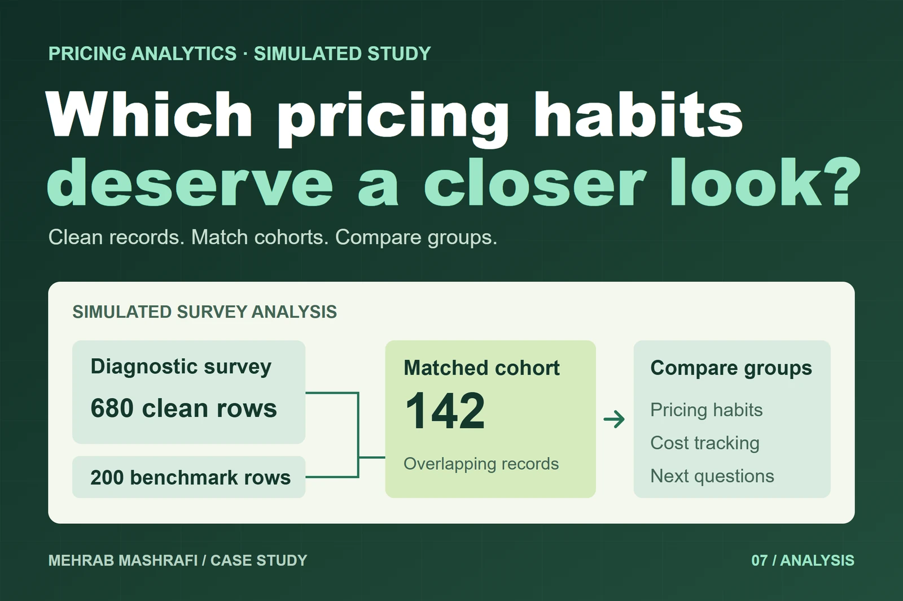
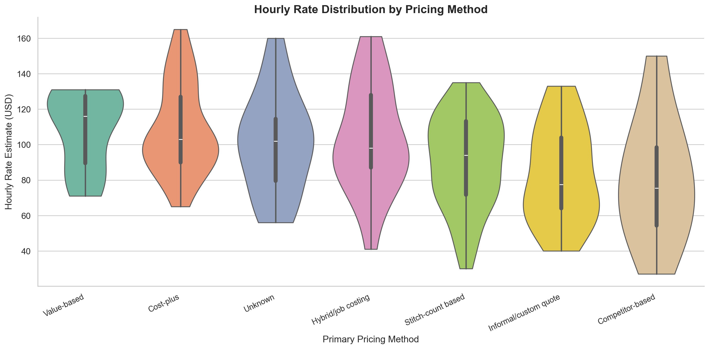

Pricing & survey analysis · Simulated survey analysis
Find the pricing habits worth investigating
I used a simulated embroidery business survey to investigate how pricing habits relate to quoted hourly rates. The work connected cleaning, cohort matching and group comparisons, then turned the patterns into questions for a real business review.

- My role
- Analyst, data preparation through interpretation
- Work
- Cleaning, cohort matching, segmentation, statistical tests and text analysis
- Project context
- Exploratory portfolio study using simulated survey style data
01 / Question
Which pricing habits are worth examining?
A quoted hourly rate does not tell the whole story of a shop’s pricing. Cost tracking, overhead assumptions and confidence can influence how a quote is assembled. I used a simulated survey to explore those relationships rather than assume a higher rate meant a higher profit.
The analytical task was to connect diagnostic responses with financial benchmark records, create a usable comparison cohort and identify questions a shop owner could investigate with real records.
02 / My work
Match the cohort before comparing the groups.
I cleaned the inputs and paired diagnostic responses with the financial benchmark dataset. Preparation produced 680 clean diagnostic rows and 200 benchmark rows, with an overlapping cohort of 142.
I grouped the matched cohort by pricing maturity and used group comparisons, statistical tests and open text analysis to examine rate differences and recurring themes. The text helped surface topics such as cost tracking, confidence, overhead and regional context.
Using the overlapping cohort mattered: the two source row counts were not interchangeable with the number of records available for a paired comparison.
The comparison uses the matched cohort
- INPUT A
680 diagnostic rows
Cleaned pricing practice responses - INPUT B
200 benchmark rows
Financial comparison records - OVERLAP
142 matched records
Cohort used to connect both views
03 / Interpretation
Keep rate, revenue and profit separate.
The simulated sample showed an estimated quoted hourly rate gap of about $67 between stronger and weaker pricing system groups. That association describes the constructed sample. It is not extra margin earned by shops, a causal effect or a market wide benchmark.
I treated the patterns as a way to select review questions. Does a quote include setup time and overhead? Are labour assumptions consistent for rush orders? Does a regional comparison use a genuinely comparable job?
These questions connect the analysis to a business task without turning an exploratory difference into a prescribed price increase.

04 / Outcome
An analysis that leads to a better next question.
The output combines a cleaned cohort, pricing maturity comparisons and themes for a structured discussion. The transferable contribution is the method: reconcile inputs, define comparable groups and keep the business meaning of each measure intact.
A real pricing intervention would require suitable shop records, an agreed outcome measure and a way to check the change afterward. This portfolio study demonstrates that analytical preparation; it does not measure a customer’s financial gain.
Quoted hourly rate gap
About $67/hour
Estimated difference between pricing system groups in simulated data.
An association in this sample, not a margin gain, causal effect or market price recommendation.
Explore the work
What assumptions sit inside your quotes?
Bring the cost fields, labour assumptions and outcome you want to understand. We can design a comparison around those records.
Discuss a pricing analysis ↗ Email meProject experience by Mehrab Mashrafi. Updated .